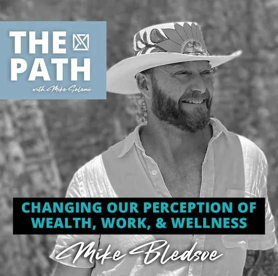

B885 · Changing Our Perception of Wealth, Work, & Wellness
Hi {first_name},
Today on the show we have Mike Bledsoe. He is a business coach that focuses a lot on rewriting stories, personal growth, and inner healing. This episode dives into what it’s like to have a business that is in alignment with your values, identifying how we work best based on personality types, and how to engage in the highest leverage activities. We also discuss Mike’s newest endeavor of sharing his passion for providing resources for helping people along their journey of healing through psychedelics. In Episode #26 of The Path Podcast, Mike and I discuss:

Click here to listen on Apple.
Click here to listen on Spotify. Yours in Health, Mike
P.S. I would love your help with something... to ensure that I am creating content that will help you most in life. If you could please complete a brief survey, that would be amazing. Your input will be instrumental in shaping the direction of The Path Podcast, new programs, Youtube content, and more. I truly appreciate your help, thank you. Click here to complete this quick survey. |